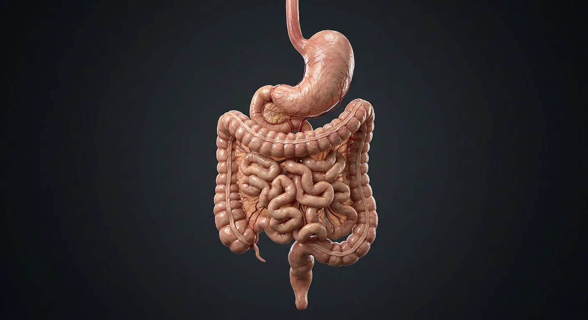

ORGAN → UNDER THE LENS
Intestinal wall and villi
Tap to compare the organ region with a tissue-level teaching illustration.
Read about Villus & microvilli ↓The gastrointestinal tract from oesophagus to rectum, with the villus that does the absorbing.

OesophagusDuodenumJejunumAscending colonCaecum & appendixFundus of stomachRugaeBody of stomachPyloric antrum & pylorusTransverse colonDescending colonIleumSigmoid colon & rectumFood is stored and acidified in the stomach, where pepsin begins protein digestion and the muscular wall churns it into chyme. The duodenum neutralises acid and receives bile and pancreatic juice; the jejunum and ileum absorb almost all nutrients across a surface amplified by circular folds, villi and microvilli to roughly 250 m². The colon then reclaims water and electrolytes and stores faeces. The gut also carries its own nervous system — the enteric plexuses — with more neurons than the spinal cord.
These are educational cutaways, not literal magnifications of an organ pixel or laboratory slides. A ring marks the approximate tissue region; part-specific lines appear only where identifiable.
Tap to compare the organ region with a tissue-level teaching illustration.
Read about Villus & microvilli ↓These 14 structures describe anatomy related to the chapter’s regional illustration. Each entry separates location, function and a clinical point.
A 25 cm muscular tube from pharynx to stomach, passing through the diaphragm at T10.
What it doesPropels the bolus by peristalsis; the lower sphincter prevents reflux.
Clinical connectionIts lower third drains to the portal system via the left gastric vein — hence varices in portal hypertension.
The dome above the oesophageal opening, usually filled with a gas bubble on erect films.
What it doesStores swallowed air and gives the stomach its reservoir.
Clinical connectionA fundal mass can be missed behind the gastric gas bubble on a plain radiograph.
The main reservoir between fundus and antrum, lined by acid- and pepsin-secreting mucosa with rugae.
What it doesMixes food with acid and pepsin; intrinsic factor for B12 absorption is made here.
Clinical connectionLoss of parietal cells (autoimmune gastritis) causes pernicious anaemia through B12 malabsorption.
The distal funnel ending in the thick pyloric sphincter.
What it doesGrinds food and meters chyme into the duodenum; G cells here secrete gastrin.
Clinical connectionChronic antral gastritis from Helicobacter pylori is the main route to peptic ulcer and gastric cancer.
Longitudinal folds of gastric mucosa that flatten as the stomach distends.
What it doesAllow expansion and channel the flow of chyme.
Clinical connectionThickened rugae (Ménétrier disease) cause protein-losing gastropathy.
A C-shaped 25 cm first part of the small bowel wrapping the pancreatic head; the ampulla opens on its second part.
What it doesNeutralises acid with bicarbonate and mixes chyme with bile and pancreatic enzymes.
Clinical connectionMost peptic ulcers occur in the duodenal bulb; posterior ulcers can erode the gastroduodenal artery.
The proximal two-fifths of the mobile small bowel, in the left upper quadrant, with tall circular folds and few Peyer's patches.
What it doesThe principal site of carbohydrate and protein absorption.
Clinical connectionIts rich vasa recta give it a deeper red colour and thicker wall than ileum at surgery.
The distal three-fifths, in the right lower quadrant and pelvis, with Peyer's patches on the antimesenteric border.
What it doesAbsorbs bile salts and vitamin B12–intrinsic factor complex; delivers residue to the caecum.
Clinical connectionCrohn disease most often affects the terminal ileum, causing B12 deficiency and bile-salt diarrhoea.
The blind first part of the colon in the right iliac fossa, with the worm-like appendix at its pole.
What it doesAbsorbs fluid; the appendix is a lymphoid organ and gut flora reservoir.
Clinical connectionAppendicitis classically migrates from periumbilical pain to McBurney's point as the parietal peritoneum becomes inflamed.
Retroperitoneal, from caecum to the hepatic flexure under the right lobe of liver.
What it doesAbsorbs water and electrolytes; moves residue proximally to distally.
Clinical connectionRight-sided cancers tend to bleed and cause iron-deficiency anaemia rather than obstruction.
The mobile loop slung between hepatic and splenic flexures on the transverse mesocolon.
What it doesContinues water absorption and storage.
Clinical connectionIt is the commonest site of volvulus after the sigmoid, and of colonic obstruction from cancer.
Retroperitoneal, from splenic flexure to the iliac fossa.
What it doesStores and transports faeces toward the sigmoid.
Clinical connectionThe splenic flexure is a watershed zone (Griffiths' point) vulnerable to ischaemic colitis.
The S-shaped mobile loop leading into the rectum, which follows the sacral curve to the anal canal.
What it doesStores faeces; rectal distension triggers the defecation reflex.
Clinical connectionThe sigmoid is the commonest site of diverticular disease and of volvulus.
Finger-like mucosal projections ~1 mm tall, each with a capillary network and a central lacteal, covered by enterocytes with a brush border of microvilli.
What it doesMultiply the absorptive surface ~600-fold; sugars and amino acids enter blood, fat enters the lacteal.
Clinical connectionIn coeliac disease, gluten-driven immunity flattens the villi, causing malabsorption and steatorrhoea.
These 6 additional entries give anatomical context. They are deliberately not assigned a photographic pin on the regional image.
Related deep chapters: Small intestine · wall & enteric plexuses.
Fingerlike projection of small-intestinal mucosa with epithelial cover and lamina propria core.
What it doesExpands absorptive surface.
Clinical connectionTypical colon lacks villi.
Epithelial invagination between villus bases toward muscularis mucosae.
What it doesHouses stem and secretory cell niches.
Clinical connectionCrypt loss can impair epithelial renewal.
Absorptive columnar epithelial cell with apical microvilli.
What it doesTakes up digested nutrients.
Clinical connectionLoss of brush-border surface impairs absorption.
Dense apical microvilli on enterocytes, not the large villi themselves.
What it doesIncreases membrane area and supports digestive enzymes.
Clinical connectionVillus and microvillus are different scales.
Mucin-producing epithelial cell scattered among enterocytes.
What it doesLubricates and helps protect mucosal surface.
Clinical connectionCell proportions vary along intestine.
Granule-rich cell near base of small-intestinal crypt.
What it doesProduces antimicrobial molecules supporting stem-cell niche.
Clinical connectionTypical mature Paneth cells are much less common in normal colon.
Short answers grounded in the structures described above. Use the illustrated guide for anatomical context.
The stomach stores and mixes food with acid and enzymes. The small intestine completes much digestion and absorbs nutrients; the large intestine absorbs water and forms stool.
Food moves from oesophagus to stomach, small intestine and large intestine before leaving through the rectum and anal canal. Length varies between people and measurement methods.
A 25 cm muscular tube from pharynx to stomach, passing through the diaphragm at T10. Function: Propels the bolus by peristalsis; the lower sphincter prevents reflux.
The main reservoir between fundus and antrum, lined by acid- and pepsin-secreting mucosa with rugae. Function: Mixes food with acid and pepsin; intrinsic factor for B12 absorption is made here.
Function: Allow expansion and channel the flow of chyme. Longitudinal folds of gastric mucosa that flatten as the stomach distends.
Follow these connected structures and body systems in the illustrated atlas.
 Teeth · dental anatomyFollow crown-to-root layers, 32 permanent and 20 primary tooth positions, class shapes, FDI/Universal numbers and dental sensory nerves.↗
Teeth · dental anatomyFollow crown-to-root layers, 32 permanent and 20 primary tooth positions, class shapes, FDI/Universal numbers and dental sensory nerves.↗ Small intestine · wall & enteric plexusesMap villus–crypt renewal, epithelial cell types, capillaries and lacteals, plus two enteric nerve plexuses.↗
Small intestine · wall & enteric plexusesMap villus–crypt renewal, epithelial cell types, capillaries and lacteals, plus two enteric nerve plexuses.↗ LiverThe body's chemical plant: metabolism, bile, clotting factors, detoxification and storage.↗
LiverThe body's chemical plant: metabolism, bile, clotting factors, detoxification and storage.↗ PancreasA dual gland: digestive enzymes from acini, hormones from the islets of Langerhans.↗
PancreasA dual gland: digestive enzymes from acini, hormones from the islets of Langerhans.↗General anatomy references and related source chapters for continued study. These links do not make the digital illustrations clinical images or certify every anatomical variant.
This educational page is not medical advice and has not undergone formal clinical peer review. Spotted an error? Contact the editor.
Open the realistic interactive plate, label lines, focus view and self-test.